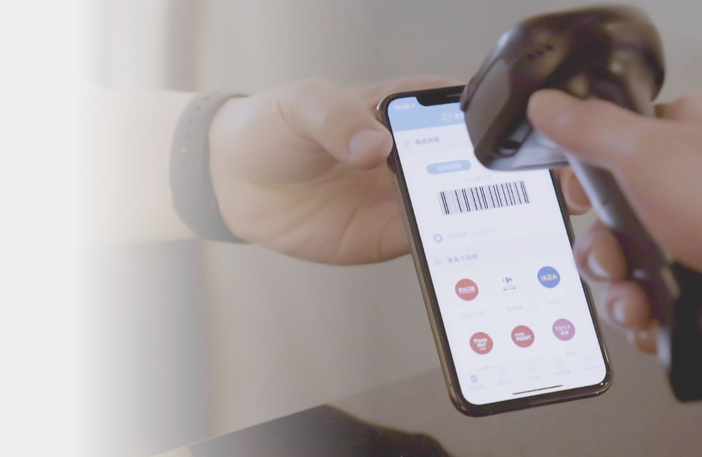

2021~2023
雲端發票 App 中獎分享功能
雲端發票是一款以「環保生活、便利消費」為訴求的電子發票APP。 透過用戶回饋與訪談，並經常與RD、PM Brainstorming出新的設計與想法，慢慢優化並精進App，努力設計出滿足各種需求的功能，共同目標就是為用戶打造便利、環保的消費生活。

中獎分享功能-優化流程
-
為了達到產品aarrr漏斗，透過既有用戶用中獎的爽感，運用推薦機制來擴散吸引潛在用戶下載。思考方向：
1.如何引誘分享?
2.分享會透過那些平台管道?（ta25~35女性）
3.留意圖片要用陌生用戶知道是雲端發票APP (須留意選擇悖論:不讓用戶有超過2~3個選擇)
4.思考放置入口
→ 先將功能出現的入口統整，並繪製簡易的Flow，再根據功能進行Wireframe流程繪製。
→ 分享圖則以可吸引User目光的高彩度設計為主，期望User可將中獎喜悅透過社群軟體分享出去，並順便帶入新用戶下載流量！


Design Highlights
- 跨平台一致體驗 支援 iOS / Android / Windows / MacOS，讓不同裝置的使用者都能維持一致的操作體驗。
- 操作簡單直覺 考量使用者場景多為會議、訪談、即時筆記，介面設計強調「快速啟動錄音」「即時轉文字」「一鍵分享摘要」，減少操作步驟與認知負擔。
- AI 文字摘要 呈現如標示重點段落、摘要條列、標籤分類等，提升資訊吸收效率。
- 裝置連接與錄音狀態提示 讓使用者能清楚掌握錄音狀態、連線狀態與轉寫流程。
- 隱私與資料安全 錄音與轉文字內容涉及個資，需設計明確的權限提示與使用者授權流程，讓用戶了解資料儲存與傳輸方式。